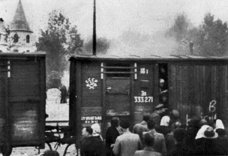
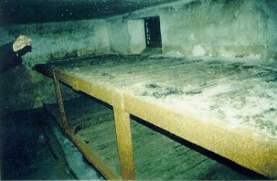
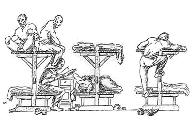
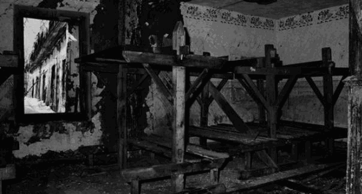

The gulag systems of the former USSR were the real death camps. Everything the Jews are and do, they cleverly blame upon Gentiles. If one does enough in-depth research, one will find that slave labor/death camps are actually a Jewish idea and Jewish invention, and existed long before the alleged Nazi camps. This acts as a distraction and diverts the attention of the populace from the real crimes.
Through all of the years following the end of the Second World War, we are forever being bombarded on a regular basis, straight from Jew Hollywood, film after film, documentaries, and other media depicting the alleged "holocaust" of the Jews at the hands of Nazi Germany. This has acted as a major distraction amongst many other things over the years and has diverted attention from the real death camps, which were all run and operated by Jews, under Jewish communism. Long before Adolf Hitler even came to power, these slave labor death camps were in full operation. In addition, EVERYTHING the Jews accuse the Nazis of, they, themselves put into action in the 1920's. If one does the necessary research, one's eyes will be opened to the truth.
The packing of Gentiles for use of slave labor in cattle cars, so tightly packed, few could even move. This was also done to the Black African slaves on the slave ships that were all owned and operated by Jews. To read the full account, you can access the link below. Though we are very much against Islam, this is a detailed and an excellent article:
Who Brought the Slaves to America? By Walter White Jr., 1968
This is also a fact today that can easily be seen with industrial farming. The Jews own the major corporations that engage in this most heinous abuse of animals. They are all packed in tiny cages and crates, living in their own filth and waste, unable to even turn or barely move, and if you do the research, you will see a pattern here. All of this is a Jewish concept, packing living beings into extremely small spaces to be used for Jewish profits and exploitation in the most brutal of ways.
All of this was cleverly blamed upon the Nazis. With the media keeping up the momentum as they also do with promoting their lie of Christianity, few people really questioned whether this was true or not. The Jews did not anticipate or expect the collapse of the USSR and the Eastern Communist Bloc. Many accounts of the slave labor death camps [few actually did survive to tell] are now being revealed to the public, but one must do the necessary research. Names such as "Auschwitz" "Treblinka" "Sobibor" "Dachau" are commonly known. In addition to the plethora of films coming out of Jewish Hollywood, the Jewish controlled media is incessantly publishing and promoting books on the subject.
How many people have heard of Kolyma, or Serpantinka? There are thousands more. The list of these Jew operated slave labor camps is prolific and endless. The link below is only a sampling:
List of Gulag Camps [Wikipedia]
There are thousands in China, many in North Korea and in former communist countries; all run by Jews with Jewish standards for Gentiles. Jews come in all races and ethnic groups. They can be identified by their DNA, which is another area people need to research and learn about.
Since the revealing of the atrocities committed under Jewish communism, now the Jews are working overtime, trying to compare Jew Josef Stalin with Adolf Hitler. In addition to this Jewish trash, they put up websites and such trying to dissociate themselves in the way of claiming Stalin, Beria and others who ran this brutal murder system were not Jewish, even going so far as to claim Vladimir Lenin was "only part Jewish." Few people bother to do the necessary research and this can be difficult, but the truth is...Stalin, Beria and Lenin were all Jewish.
Josef Stalin's real last name was Dzhugashvili, meaning in Georgian "Son of a Jew." In addition, death camp survivor and author Aleksandr Solzhenitsyn wrote to a pen pal where he made a minor comment criticizing Stalin and he also mentioned Stalin's Jewishness. His letter was intercepted and for this, he was promptly arrested. Stalin's Jewishness was common knowledge, but not to be mentioned. Lavrenty Beria, mass murderer and monster was a Karaim Jew. He was also very easy on and even benevolent towards the Jews.
[Reference: Commissar: The Life and Death of Lavrenty Pavlovich Beria by Thaddeus Wittlin © 1972].
The victims of the Jew controlled communist slave labor death camps have received nothing. No reparations, no help, and the surviving families have gotten nothing. What is even worse it the fact that NONE of the Jewish criminals has ever been brought to justice. While the Jewish controlled media is buzzing away with story after story of so-called "Nazi war criminals" being "brought to justice," there has been no justice whatsoever for the gulag victims which totaled in the many millions around the world from the communist countries. In addition, the ignorant public is focused on Nazi this and Nazi that and does not even know of the real victims. This kind of Jew indoctrination is also forced in the schools where communism is taught as something good and favorable by Jewish college professors and their Gentile stooges. Communism, like Christianity is another Jewish brotherhood program which preaches equality, a decent standard of living and worker benefits...ALL LIES! Both are programs of slavery and death. Both programs like anything else Jewish create the problem and then push the solution.
The following article reveals the heinous atrocities committed against Gentiles at the hands of the Jews. Of course, Jews have also had a history of persecuting their own. Jews which were in small numbers in some of the camps are the ones who scream the loudest and are held up by the Jewish press to again deceive people into believing communism isn't Jewish, which is another total lie. The blueprint for Jewish communism is in the bible. The Jews wrote the bible.
Another noted example is everything the Jewish god "yaweh/jehova" in the bible is and does is blamed upon Satan. For example, the attributes "human hating" "a murderer and a liar from the beginning" [one only needs to look to the Old Testament for one to see the endless genocide and mass-murder of Gentiles at the hands of this so-called "god." They claim the Devil is totally material, yet there is nothing at all spiritual about the Bible or Christianity, just a fictitious history of the Jews, the subliminal message of Jewish domination over Gentiles and the life of that fictitious nazarene. There are endless contradictions and opposing verses in the Bible. These are to ensure that the Bible will adapt to all time periods and situations, in order to perpetuate the program of Christianity. Jews learn to argue early and take this further in their education in a Yeshiva.
Unless the Gentile world wakes up, now that we have a bit of a chance with the internet and mass communications, our world will once again descend into the Dark Ages and we will again be subjected to total slavery, serving the Jews under the most brutal conditions imaginable.
"As one camp doctor told a victim in 1949: You are not brought here to live but to suffer and die...If you live...it means that you are guilty of one of two things: either you worked less than was assigned you or you ate more than was your proper due."
From "East of the Sun, The Epic Conquest and Tragic History of Siberia" by Benson Bobrick © 1992
The Real Death Camps and Holocaust
To understand the truth, the Jew has made it illegal in many areas to cover up this subject [truth does not fear investigation]. We look at what really was happening and shine the light on this situation. The truth is, the real holocaust occurred in the Jewish controlled and created Soviet Union. Of the many such death camps where millions perished, we shall examine Kolyma, one of the many and whose legacy is of the nature of the Jewish beast. Later we shall see, coming right from the mouths of the Jews, the humane reality of the German camps that were as proven even in a court of law, not death camps but humanely run industrial centers of production, with even Olympic sized swimming pools and sports fields with Red Cross personal and observers.
Kolyma: The Arctic Death Camps
“Those who arrived were already crushed and humiliated, starved, and ill-clad remnants of human beings. They would normally have spent around three months in prison under conditions and treatment thought adequate to such as they. The train journey – always one of the worst of the various experiences of the victims, with its fetid wagons, its inadequate water supply, its lack of food and light, its brutal guards – was, of course, the longest undergone by any of the Gulag’s victims: 28 days, 33 days, 35 days, 47 days are typical times reported”

Embarkation day would arrive at Vanino:
I remember Vanino port
“It took us some time to accustom our eyes to the dim light of the dingy lower deck. As I began to see where we were, my eyes beheld a scene which neither Goya nor Gustave Dore could ever have imagined. In that immense, cavernous, murky hold were crammed more then 2,000 women. From the floor to the ceiling, as in a gigantic poultry farm, they were cooped up in open cages, five of them in each nine-foot-square space. The floor was covered with more women. Because of the heat and humidity, most of them were only scantily dressed; some had even stripped down to nothing. The lack of washing facilities and the relentless heat had covered their bodies with ugly red spots, boils, and blisters. The majority were suffering from some form of skin disease or other, apart from stomach ailments and dysentery.
At the bottom of the stairway we had just climbed down stood a giant cask, on the edges of which, in full view of the soldiers standing on guard above, women were perched like birds, and in the most incredible positions. There was no shame, no prudery, as they crouched there to urinate or to empty their bowels. One had the impression that they were some half-human, half-bird creatures which belonged to a different world and a different age.”
Many of the prisoners never survived the crossing [which typically lasted an entire week], they died from violence, starvation and diseases of being crammed literally in many cases shoulder to shoulder like chattel into dirty holds for weeks. The scene was identical to the Jewish owned slave ships packed with thousands of African slaves, literally wall to wall, in previous centuries. This time, new Goyim chattel for use as slave labor for the Jewish Communist State.
The Kolyma Killing Fields
Over three million people were systematically murdered by the Jewish Communist Regime in Kolyma alone, and Kolyma formed only one such camp of many across the Soviet Jewion. Each of the accounts is not just of the individual giving such, but the collective experience of the millions of those condemned to such camps.
The Reality of the Camps:
"In the summer of 1932, the operation was launched. The collectivization assault on the peasantry had produced a vast expansion in the number of arrests. Of the 10 million ‘Kulaks’[my note closer to 15 million] disposed of, half probably died in famine and by execution, and of the remainder certainly no fewer than three and a half million poured into the prison camps. Kolyma got its share."
"Nor were the barracks or huts in which prisoners spent their spare hours much of refuge. Desperately over crowded, with bunks three or four deep, they were often quite uninsulated (guards’ huts had sawdust between two layers of boarding). And, ill-constructed as they were, the cracks and holes were usually stuffed with moss, rags or straw. Moreover, almost all the miners were afflicted by incontinence of urine. They would try, when sent to other camps, to get the lower bunks, in order to spare their colleagues. Where they were all together this was not possible."
"The stoves, too, were quite inadequate. It was a constant complaint that ‘The barracks were not given enough heat, clothing would not dry out. In the fall they kept people, soaked to the skin, out in the rain and the cold to fulfill norms that such hopeless wrecks could never fulfill…Prisoners were not dressed for the climate in the Kolyma region. They were given third-hand clothing, mere rags, and often had only cloth wrapping on their feet. Their torn jackets did not protect them from the bitter frost, and people froze in droves.
"A dozen lice in one’s underclothes don’t count. Lice begin to attract the attention of the prisoners and doctors when one can shake them out with a movement of the hand, when a crawling pullover starts to move on its own. Is it possible that a man, of whatever type, might not wish to escape this torture when he does not sleep and scratches his filthy body, gnawed by vermin, till the blood runs?"
"When it had become clearly impossible to delouse themselves, women would give up trying, and only when the itching became intolerable would reach under their blouses, ‘fish out a handful of the vermin, and throw them away."
One prisoner records:
"I was convinced that solders of the MVD [camp guards] must have been picked for their sadistic qualities. They had a completely free hand over us and would do anything, particularly when drunk, to make prisoners suffer. For instance, when going to or coming back from work in the usual columns of five, they would sometimes stop us in the middle of the road, unleash their dogs, and laugh uproariously as the dogs sank their fans into the prisoners’ legs. It was a time when they were absolutely free to do anything, even kill us – and get a reword for it. I have known them to call a man over to make a fire for them or to bring them a mug of water when on sentry duty, and then kill the unfortunate under the pretext that the prisoner had crossed the ‘no trespass’ line."
The working conditions:
Their faces all showed signs of frostbite, although the winter was only three months old and the most severe frosts were yet to come. The majority of them were so dirty looking I was willing to wager that some of them had not washed their faces for weeks. Their clothes were like nothing I had ever seen at the Kolyman-everything from the torn boots to the incredibly dirty rags wrapped around their necks instead of scarves, their burned and tattered winter coats.
The men had starved, worn-out faces, quiet voices, were completely absorbed in themselves and uncommunicative….The sight of these creatures who had almost lost the image of man made me feel distinctly uncomfortable.
Conditions killed them off quickly. But ‘conditions’ were assisted by a massive employment of execution as a reprisal against failure to produce adequate gold, and, in effect, on any pretext whatever.
Wholesale arrests began in the camp. As a rule, the charge was systematic under-fulfillment of quotas. Since no man in the gold field could possibly fulfill them, the failure was ascribed as criminal when the worker completed less than 50 per cent of the quota.
It was absolutely impossible to measure accurately the exact performance of a worker, and the estimate made depended entirely upon the attitude of the foremen. The foremen made daily measurements in a rough and ready fashion with the help of a tape line, and made their reports to the office where the volume of excavated sand was translated into percentages of the daily quota fulfilled by each brigade. In doing this a practice was systematically resorted to whereby a certain amount of work performed by the less efficient brigades was stolen from them and credited to the better brigades as a means of encouraging them. But the foremen where not altogether free in recording their measurements. Once a month a measurement of the mine’s entire output was made by surveyors with instruments of great accuracy. The engineers measured the depth the mine increased during the month, and compared this with the added-up measurements of the foremen. When the figures disagreed – and they always did, and to a great extent – the foremen were merely reprimanded. Now, by Pavlov’s new order, foremen guilty of excessive measurements were to be put on trial. The same order stated the fact that six foremen had been executed for deceiving the State. It was natural that the foremen often went to the other extreme – charity begins at home – and deliberately gave lower figures. The official figures for labour productivity immediately dropped heavily.
Then the firing squad set to work.
One survivor recalls:
In our mine the Third Section…was particularly active during the 1937-8 period. Some nights when we came back from work, the guards read out thirty to fifty names. The persons called had to step out of the ranks and were marched off immediately to the prison. The next morning they were driven in trucks to the Khatenakh sopka, where they were shot.
In the evening, in addition to the list of new victims, the guards would read us the announcement: ‘By judgment of the camp command’ – (then would follow the names of those who had been executed) – ‘shot for sabotage, ill-will and agitation against the Soviet power.’
‘For counter-revolutionary agitation’. This was the way one of the paragraphs in Garanin’s sentences began. For the man in the street in 1937 it hardly needed explaining what counter-revolutionary agitation was: Praising a Russian novel published abroad – ten years; declaring that one queued too long to buy soap –five years…But in the camps there was none of the gradation: five, ten, twenty years. Say aloud that the work was harsh, mutter the most innocent remark about Stalin, keep silent while the crowd of prisoners yelled ‘Long live Stalin’, and you’re shot– silence is agitation!... No trail, no investigation. The proceedings of the Troika, that famous insinuation, always meant death.
They shot also for ‘outrage against a member of the guard’. Any insult, any insufficiently respectful reply, any ‘discussion’ when hit, or beaten up, any too disrespectful a gesture by a prisoner towards a guard was called ‘an attempt at violence against the guard’.
Even at the end of one’s strength, one had to go to the mine; the gang chief signed every morning for this ‘unit of production’ and the administration counter-signed. This done the prisoner was saved, for the day he escaped death. Once out he could not work since he was incapable of it. He had to endure his day of torture to the end.
The last heading – the richest – under which they shot prisoners by waves was ‘non-fulfillment of norms’. This crime took entire brigades to the common graves. The authorities provided a theoretical basis for this rigour; all over the country the Five Year Plan was broken down into precise figures in each factory for each establishment. At Kolyma they were broken down for each gang. ‘The Five Year Plan is the Law! Not to carry out the Plan is a crime!’
According to various accounts, accepted by Roy Medvedev and others, Garanin [Chief of USVITL] himself used to walk down the line of prisoners on parade, shooting them when he felt like it: two solders followed him taking turns at loading his revolver. …lesser officials such as Nikolai Aglamov, Head of the Southern Camp Administration, who ‘liked to select a brigade which was guilty of something from those paraded before him. He would order it to be led to one side – and himself shot the terrified people with his pistol as they huddled together, accompanying the operation with merry cries. The bodies were not buried; when May came they decomposed and then prisoners who had survived were summoned to bury them….This attitude to human life became common among the NKVD as a whole. A typical account is of a drunken NKVD officer appearing at a work site, accusing prisoners of stealing drinking bowls from the State (It was then quite common for them to carry their gruel to the work site to eat it) and shooting wildly at the group, killing one and wounding two others.
In the women’s camps, too, random killing was the norm. That year, 1 May and 7 November were celebrated by sending batches of prisoners, without other pretext, to the penalty cells, where many died. Then, on the usual parades, the order would be given for every tenth woman to be taken out and shot. On one occasion thirty Polish women were shot in a batch at the Elgan camp. Meanwhile starvation and epidemics took their toll, as in the men’s camps.
Many camps became famous for their executions and mass graves: Orotukan, Polyarny Spring, Svistoplyas, Annushka, and even the agricultural camp Dukcha. The Zolotisti mine had a particularity murderous reputation. There, Solzhenitsyn tells us, brigades ‘were taken from the face during the day and shot one after the other on the spot. (This was not instead of executions at night – those went on as usual.)
On his formal rounds Garanin took special note of those who where convicted of KRTD (counter-revolutionary Trotskyist activity).
‘Which of these have not met their quota?’ he would ask. Most had not, could not. At evening roll call, when they returned from the mines, he would call out these unfortunates, revile them as saboteurs who were trying to continue their criminal counter-revolutionary Trotskyist activities even in the camp, and he would have them driven in a herd out of the gate. At a short distance from the camp they would be shot en masse under his personal supervision. This was still not enough. At night he would have thousand of enemies of the people taken out of all the Kolyma camps, loaded on to trucks and driven off to a prison. This prison, called Serpantinka, is about 375 miles west of Magadan, in the midst of the forest, and it is probably one of the most ghastly institutions in the Soviet Union.
Serpantinka Death Camp:
"Another account tells us that, 'At Serpantinka each day thirty to fifty people were shot in a shed near the cooler. The corpses were then dragged behind a mound on motorised sledges…There was also another method: prisoners were led with eyes bound to a deep trench and were shot in the ear of the back of the neck.’
Another prisoner descries a particular case of an acquaintance:
Skeletons, they worked badly. Dyukov (the brigade leader) asked for better rations. The director refused. The famished gang tried heroically to fulfill the norms and faded away. Everyone turned against Dyukov….Dyukov made more and more vigorous complaints and protests. His gang’s output went on falling, and so its rations went down. Dyukov tried to intercede with the administration. This in turn asked the competent services to inscribe Dyukov and his men on the ‘lists’. They shot Dyukov and all this gang one morning by the Serpantinka.
But even in the ordinary camps,
The death rate was particularly high among men brought to the Kolyma during the last six months. Their body resistance had been undermined in jail before they were shipped to the gold field, and they simply succumbed under the violent pace of work.
More:
The Bestial Reality Of Daily Life, A Real Life Horror Film:
A mobile detachment designed to catch escapers. It was commanded by the young Corporal Postnikov.
Drunk with murder he fulfilled his task with zeal and passion. He had personally captured five men. As always in such cases, he had been decorated and received a premium. The reward was the same for the dead and the living. I was not necessary to deliver the prisoners complete.
One August morning a man who was going to drink at a stream fell into an ambush set by Postnikov and his soldiers. Postnikov shot him down with a revolver. They decided not to drag the body to the camp but to leave it in the taiga. The signs of bears and wolves were numerous.
For identification, Postnikov cut off the fugitive’s hands with an axe. He put the hands in his knapsack and went to make his report on the hunt. …In the night the corpse got up. Pressing his bleeding wrists against his chest, he left the taiga following the trail and reached the prisoners’ tent. With pale face, mad blue eyes, he looked inside, holding himself at the opening, leaning against the doorposts and muttering something. Fever devoured him. His padded coat, his trousers, his rubber boots were stained with black blood.
They gave him warm soup, wrapped his chopped-off wrists in rags and took him to the infirmary. But already Postnikov and his men came running out of their little hut. The soldiers took the prisoner. He was not heard of again….
Camp commandants had a free hand. Some shot prisoners at random, simply to spread terror. Prisoners who after fourteen hours in the mines could not do further work were shot and their bodies left on the ground for a day as a warning. Food became worse and scarcer, the output went down, and execution for sabotage became common. And we are told, for example, that at Debin, in 1951, three prisoners of a group which had been allowed out to gather berries got lost. When they were found their heads were bashed in with rifle butts, and the camp chief, Senior Lieutenant Lomaga, had their bodes hauled past the assembled inmates in that condition.
My note* another popular tale of the fictional holocaust of the Jews by the Germans is the mythic gas vans. The reality of the gas vans is they were invented by a Jewish Communist and used to murder thousands of innocents in the Soviet Jewion:
“The gas van was invented in the Soviet Union] in 1936, presumably by Isay Berg, [my note JEW] the head of the administrative and economic department of the NKVD of Moscow Oblast, which suffocated batches of prisoners with engine fumes in a camouflaged bread van while on the drive out to the mass graves at Butovo, where the prisoners were subsequently buried. [5] According to Aleksandr Solzhenitsyn:
The Reality of the German Camps:
The plan was to relocate the Jews to their own region and out of Europe. This was the only "Final Solution." As honest historians who lost their careers and have been imprisoned for being honest have noted time and again. Since the Jews had almost annihilated Germany, sending millions of Germans to their graves, in return for Germany trusting them, the government took the best and most humane course of action with them. They could have killed them at this point but they didn't. The Jew, Freeman admits this all. Germany was negotiating with the Zionist's to help relocate them to another area where they would have self-determination and separation. The Jews where not rounded up or put into camps over this. It was a voluntary movement. Many Jews simply wanted to leave, as they could no longer make a living off dishonest means.
During the war the German government found that every single subversive organization in their territory even within Germany, that was attacking their civilians and troops, spying for the Allies [of Judah] and everything in-between to defeat the war effort, and cost Germany the war, just as in the Great War, were all Jewish and were working with the International Jewish networks behind the Allied governments. In order to deal with this vast Jewish fifth column, which was literally international, they simply did what America did with the Japanese living in America during the Second War. They put them into internment camps, as a war safety measure. Here they were simply put to honest work to create needed production of material for the war effort.
Right here Jewish camp imitates admit Auschwitz was no death camp:
"Holocaust" Survivors who Tell the Truth [Youtube Video]
Right from their mouths they state they where treated humanly. They had orchestras, plays, movie theatres, day care centers, and schools for their children, and even school plays. The adults worked a normal eight hour day in the factories of schools. They were paid, and they were allowed letters. They played on soccer teams, and they even had local teams come into the camps to play them. The sports field was right beside the alleged “gas chambers." There were also brothels for the inmates and swimming pools.
This documentary debunks the Holocaust:
Auschwitz - Why The Gas Chambers Are A Hoax [Youtube Video]
______________________________________________________
Sources:
Kolyma: The Arctic Death Camps, by Robert Conquest © 1979
The PHONY "six-million" holoco$t further serves as a distraction from and a cover for the REAL crimes against humanity committed under Jewish communism. Nearly everyone has heard of "Auschwitz," but how many have heard of the atrocities committed against Gentiles at Kolyma, the most notorious Gulag slave labor camp, run and operated by Jews in extreme northeastern Siberia? Or the systematic genocide of the people of the Ukraine perpetrated by Jewish communism? The Holodomor [Ukrainian Famine/Genocide of the 1932-33] perpetrated by the Jew controlled USSR.
Not to mention that the surname "Beria" is a derivative of the Jewish "Bar" no different from "Barry," Berry," all Jewish names.
Because Adolf Hitler alerted the Gentiles to the extreme threat of the Jews and their communism, Nazi Germany has been attacked relentlessly, no different from our True Creator God Satan. Nazi Germany has been unjustly accused of "exterminating Jews and many others" which is a total lie, and this can be proven. So-called "holocaust denial" is illegal in many countries around the world. Post war Germany has paid out billions upon billions of dollars, has been heaped with shame, slandered and much worse. The Jews have used their phony holocaust to exploit and to control and above all, to institute communism, both directly and indirectly around the world.
Today the world is under the grip of a new religion: Holocaustanity. This program is designed to assign meanings to their agenda, and holds a powerful spell over the minds of the Gentiles. It is powerful propaganda in the aims of the Jewish agenda. Its premise is the foundation for numerous special laws- making the Jews beyond criticism, and a tool to silence all debate and steamroll anyone who opposes their agenda. To delegitimize all information that exposes them along with those who do, and gives them moral precedent for their capital Jewish state in Israel, and the greater world system they wish to rule from Israel. It is also a powerful steroid for their Cultural Marxist [PC's real name] ideology, which is designed to destroy any healthy, organic psychology, or material institution that by its nature hinders the Jewish destruction and assimilation of their nation into the claw of the Jew World Order.
“The prisoners arriving at the huge transit camps on the Pacific coast, outside Vladivostok and later at Nakhodka, and at Vanino, in each of which a hundred thousand prisoners would be crowded into the endless array of barracks that stretched as far as the eye could see. There, they awaited the prison ships of the Kolyma run….”
"Andrei Sakharov called them the “Death-ships of the Okhotsk Sea”
Latvians in cattle cars being sent to Gulag concentration camps in the Jewish run USSR.
"When we came out on to the immense field outside the camp I witnessed a spectacle that would have done justice to a Cecil B. DeMille production. As far as the eye could see, there were columns of prisoners marching in one direction or another like armies on a battlefield. A huge detachment of security officers, soldiers, and signal corpsmen with field telephones and motorcycles kept in touch with headquarters, arranging the smooth flow of these human rivers.
I asked what this giant operation was meant to be. The reply was that each time a transport was sent off the administration reshuffled the occupants of every cage in camp so that everyone had to be removed with his bundle of rags on his shoulder to the big field and from there directed to his new destination. Only 5,000 were supposed to leave, but 100,000 were part of the scene before us. One could see endless columns of women, of cripples, of old men and even teenagers, all in military formation, five in a row, going through the huge field, and directed by whistles or flags, It was more then three hours before the operation was completed and the batch I belonged to was allowed to leave for the embarkation point.
Where the grim-looking-steamer rode,
How we climbed the gangplank aboard
To the cold and gloomy hold
“The central aim was to kill off the prisoners as one commandant put it quite openly.”
This ensured the gold was mined while killing the prisoners off. The sadism of this method was the victim would work as hard as possible to stay alive in false hope, thus ensuring a larger amount of gold production. As part of this, they where issued the worst and cheapest clothing that was worthless in the 50 to 70 degree below zero cold, and left with nothing but filthy, lice filled rags to wrap about their frost bitten feet and bodies. They were left to live stacked on top of each other like factory farm animals in cages, in shoddy, cheap huts without insulation or proper heating, in the coldest region on earth.

My note* the main method of murdering the prisoners by the millions was to assign to them impossible production quotas, then lower the already starvation rations when they could not meet them as punishment, ensuring they would die off from a mixture of exhaustion and diseases. Those who lived but were too weakened, their quotas dropped off from starvation and exhaustion, and they were simply executed en mass.


“The climate of the interior, where it may go down to -70C., is indeed the coldest in the Northern Hemisphere: the actual Pole of Cold is at Oymyakon, just over the Gydan.“
We have noted the revealingly vicious regulations, which, from 1937, practically forbade clothing adequate to the climate."
In March 1933, 600 prisoners were sent to Gold Mine No. 1 of the Mining Administration of the North…there were two other administrations of the same kind, those of the West and the South. We set off on foot on this long journey. We had to travel 370 miles in deep snow and during terribly cold weather to the Khatenakh sopka.
We had to make 16 miles a day, after which we spent the night in tents set up on the snow. After our scanty rations in the morning, we set out again. Those who were unable to survive this long grueling march and died on the way were left with the snow for their only tomb. Our guards forbade us to give them a proper burial. Those who lagged behind were shot by the guards, without stopping the column.”
The boots were always wet, never quite drying out – rheumatism was guaranteed. Then, the air in the pit, where there was no ventilation whatsoever, was filled twice daily with the poisonous fumes of blasted ammonal. Only thirty minutes were allowed for the clearing of the fumes through the entrance of the mine, after which the workers were driven back into the pits to continue their work. Many of them succumbed to the poisoned atmosphere and coughed violently, spitting blood and often particles of lung. After a short time, these were usually sent either to the weak squads for lumbering, or to their graves. Mortality was especially high among the men who carted the wet sand from the barrack after the washing. From the steamy, damp atmosphere of the heater, the perspiring wheelbarrow-pushers slipped through the opening, which was covered by an old blanket, rolling out their wheelbarrows into the piercing 50-below-zero frost. The time limit in this work was, at the most, one month, after which either pneumonia or meningitis dispatched the worker into the next world.
A representative of the NKVD three-man court – the Troika – appeared at the gold field. He held conferences with the section heads and demanded lists from them of malicious saboteurs who systematically failed to make their quotas. The section heads had no alternative but to prepare such lists and to include in them the least able workers who lowered the average labour productivity for that section.
– or, as Solzhenitsyn categories the crimes, (the announcement of which was followed by the pinning of the lists to the camp notice boards):’for counter-revolutionary agitation’ ‘for insulting the guard’, ‘for failure to fulfill the work norm’. Shalamov well develops what these offences amounted to:
They shot for ‘refusal to work’. Thousands of prisoners died before understanding the mortal danger of their attitude. Old men at the end of their strength, exhausted and famished skeletons, incapable of walking a step to reach the camp gate in the morning when the columns wound towards the mine, stayed on their mattresses. They wrote their refusal on forms roneoed in advance: ‘Although shod and clothed in conformity with the exigencies of the season…’
The richer mines ran to properly printed forms where it was enough to write the name and a few points: ‘date of birth, article of the law, duration of sentence’. Three refusals meant the execution platoon – ‘according to the law’…
"The Serpantinka (or Serpantinnaya) death camp was indeed the scene of mass executions continually through 1938, as the liquidation centre of the Northern Administration. It had been carefully prepared. One prisoner recalls that on a long journey, on the way up, a little off from the road, we passed a few long and unpleasant-looking barracks. At one time those barracks had housed a road-building unit, and were called Serpantinnaya, but since the completion of the road to Khatenakh they had been empty for over a year. I recalled that a few days before, by orders from Magadan, Serpantinnaya had been transferred to the district section of the NKVD which sent two brigades of men there to carry out some secret work. The little camp was to be fenced with three rows of barbed wire, watchtowers for sentries were to be erected every 25 yards, and a commodious house for officials and guards would be built as well as a garage. What puzzled me was the garage. It was not usual to build a garage in a small camp like this, especially since only three miles away were the big garages in the Khatenakh camp and in the Vodopyanov gold mines. Later I learned it was used to house two tractors, the engines of which produced enough noise to deaden the sounds of shooting and cries of the men. However, after a short stay, the tractors were moved to some gold field, and the automobile drivers who passed the camp at night something heard the proceedings there with the utmost clarity."
Serpantinka victims sometimes waited several days to be shot, standing in a shed packed so tight that when they were given a drink – in the form of pieces of ice being thrown in to them – they could not move their hands for it and had to try to catch it in their mouths.
[My note* no different from how cattle are packed into the Jewish owned factory farm, slaughter lines. Goy meaning cattle is Goyim after all].
Even in the early weeks of the brief Kolyma summer, the men revealed a tendency to die at a rate never before known in the region. Frequently this happened all of a sudden, sometimes even while the man was at work. A man pushing a wheelbarrow up the high runway to the panning apparatus would suddenly halt, sway for a moment, and fall down from a height of 24 to 30 feet. And that was the end. Or a man loading a barrow, prodded by the shouts of a foreman or a guard, unexpectedly would sink to the ground, blood would gush from his mouth – and everything was over.
Not long after, a new category of imprisonment was introduced– katorga. The word, referring to the old Tsarist system of forced labour, was in fact far worse. The katorzhniki worked in special camps, in chains, and without blankets or mattresses at nights. None survived.
Real famine set in at the mine. Five thousand men did not have a piece of bread. But everyone worked as usual – twelve hours a day….Exhausted by long years of half-starved existence and inhuman labour, people spent their last remnants of strength in working. And died.
I. D. Berg was ordered to carry out the decisions of the NKVD troika of Moscow Oblast, and Berg was decently carrying out this assignment: he was driving people to the executions by shooting. But, when in Moscow Oblast there came to be three troikas having their sessions simultaneously, the executioners could not cope with the load. They hit upon a solution: to strip the victims naked, to tie them up, plug their mouths and throw them into a closed truck, disguised from the outside as a bread van. During transportation, the fuel gases came into the truck, and when delivered to the farthest [execution] ditch the arrestees were already dead.
The Last Days Of The Big Lie [Youtube Video]